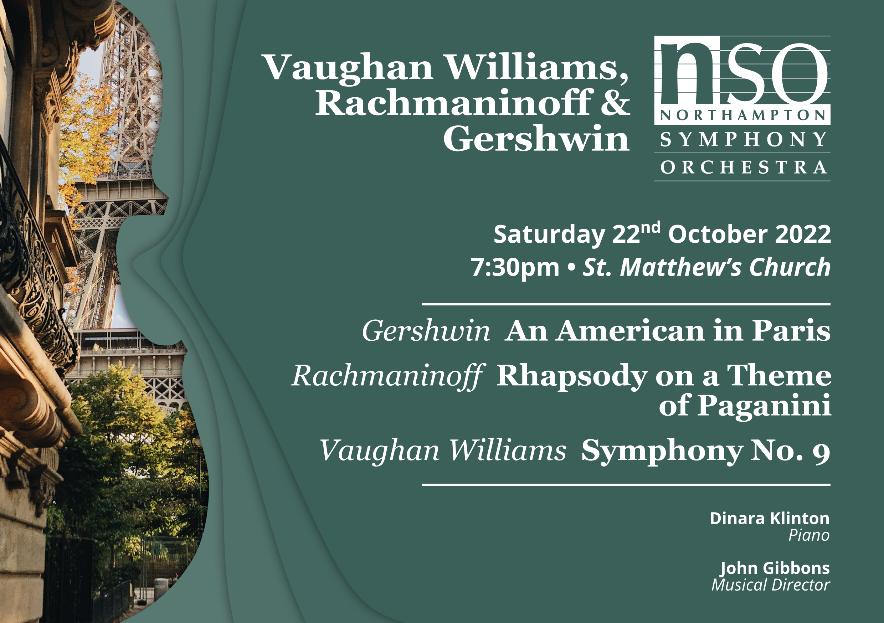

The Northampton Symphony Orchestra is a large community orchestra with over 125 years of history and a high standard of performance.
Our next concert is the exclusive concert and reception for the Friends of the NSO. If you are interested in joining the Friends for next year, please visit the Friends' page for further information. Tickets for next season's concerts are live on the "Concerts" page
For links to tickets for all concerts in our next season
The 2022/23 Northampton Symphony Orchestra season, our 130th year, promises to be an exciting and momentous season for the orchestra. We start the season with Ralph Vaughn Williams’ “visionary, violent” Ninth Symphony, Gershwin’s cheerful love letter to France An American in Paris, and , with soloist Dinara Clinton, perform the passionate and beautiful Rachmaninoff Rhapsody on a Theme of Paganini. We look forward to seeing you at our first concert of the season, Saturday 22nd October, 7:30 PM at Saint Matthew's Church Northampton. Tickets can be purcharsed using the link below.
